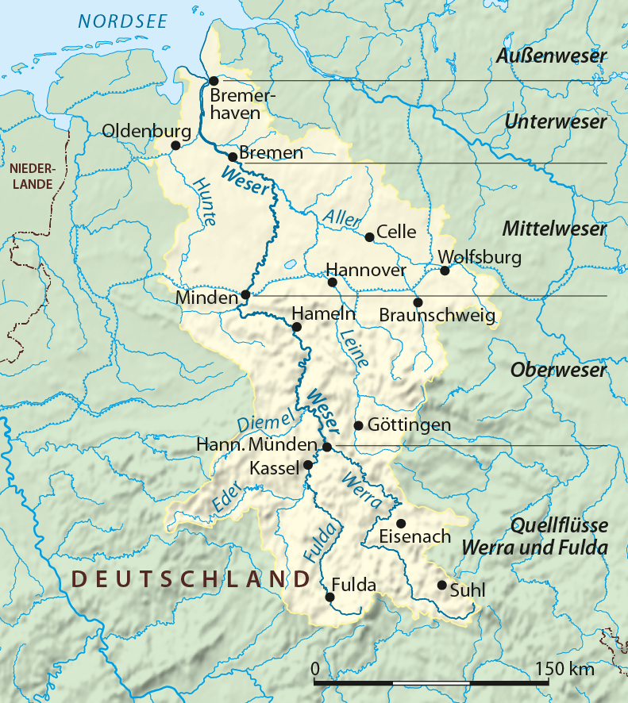
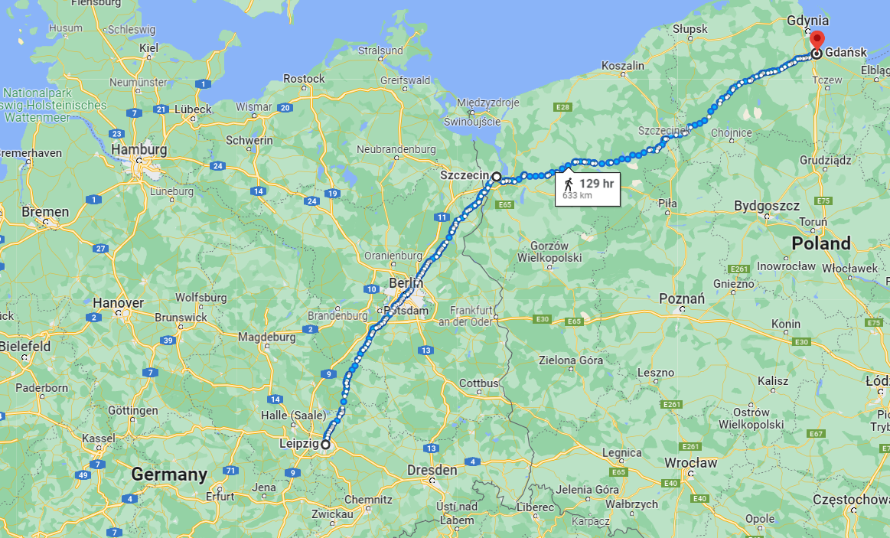
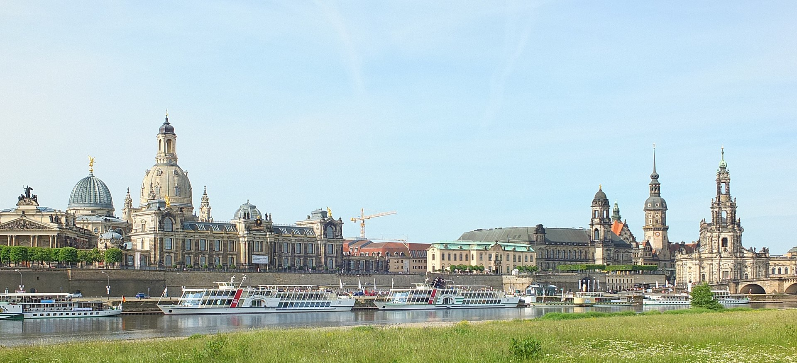
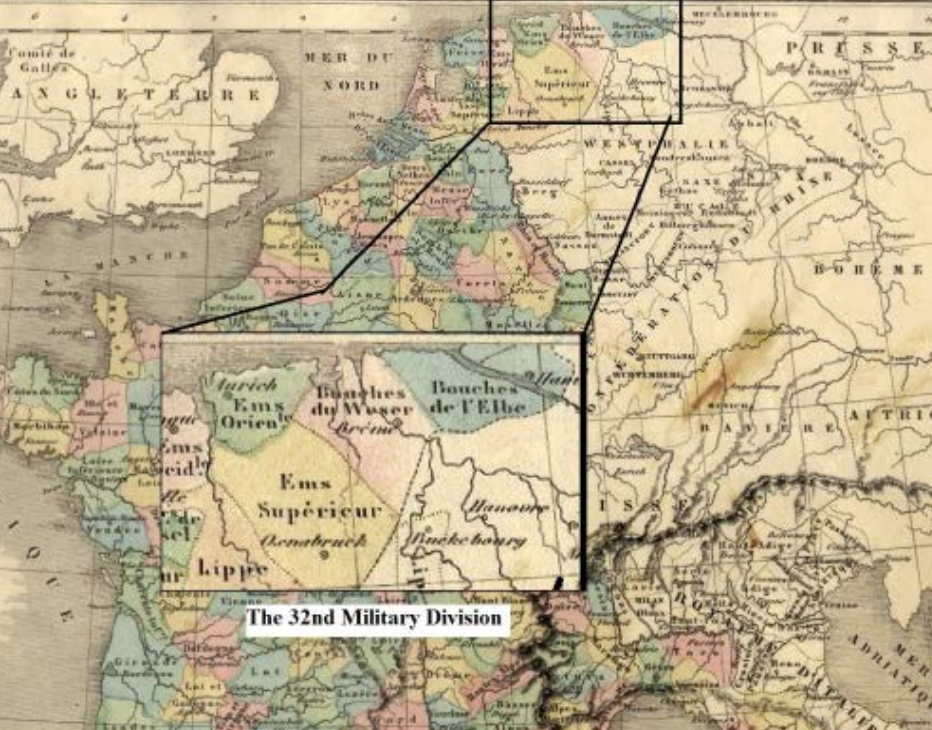
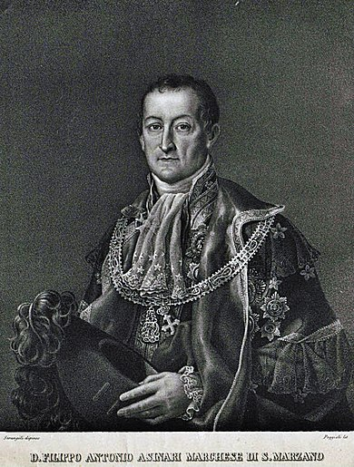
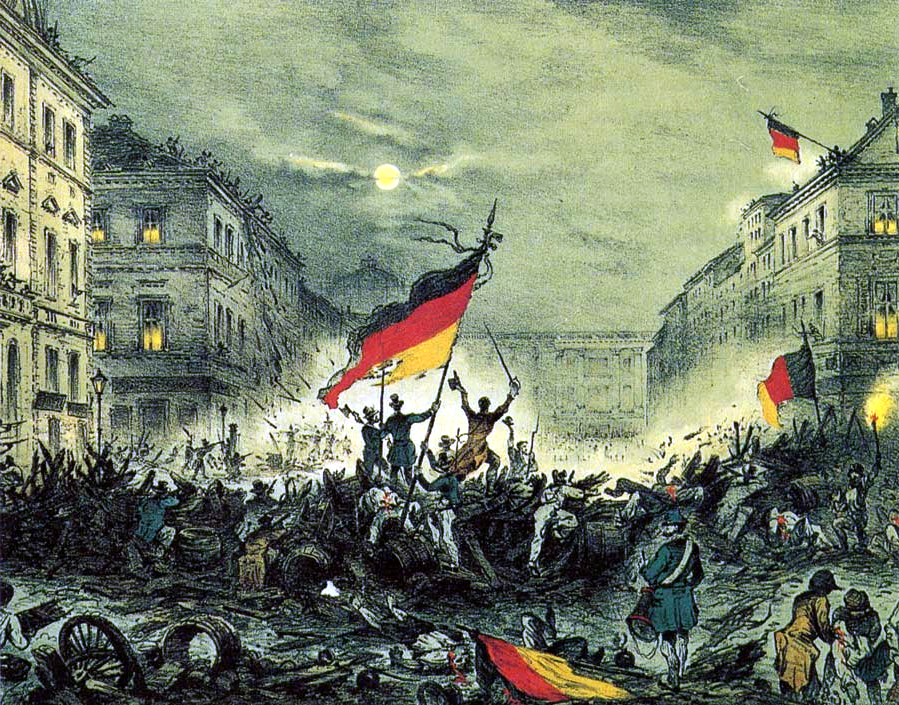

드레스덴(Dresden)을 향하여 - 지킬 것과 버릴 것
게시: 2022-05-30T06:30:46+09:00
나폴레옹은 자신이 새로운 군대, 즉 마인 방면군(Armée du Main)을 연성하는 동안 외젠이 기존 그랑다르메의 잔존부대를 지휘하여 어떻게 해서든 오데르 강, 적어도 엘베 강에서 러시아군의 침공을 막아내기를 기대했습니다. 그러나 이건 외젠이 아니라 외젠의 아버지, 즉 나폴레옹 본인이 와도 절대 불가능한 일이었고 나폴레옹도 그걸 잘 알고 있었습니다. 그래서 3월 2일에 외젠에게 편지를 보내어 '곧 내가 30만 대군을 몰고 갈테니 그때까지만 잘 버텨라'라고 위문 편지를 보내면서도, 같은 날 동생 제롬에게 보낸 편지에서는 '외젠은 엘베 강을 포기하고 물러서면 베저(Weser) 강과 카셀(Kassel)에서 적을 막아낼 것'이라고 썼습니다. 같은 편지에서, 그는 러시아군은 틀림없이 오데르 강과 엘베 강을 건너기 위해 드레스덴으로 진격할 것이며, 외젠이 그걸 막아내지는 못할 것이라고 정확하게 지적했습니다.

(베저(Weser) 강은 독일 북서부, 통칭 니더작센(Niedersachsen, 영어로는 Lower Saxony, 하(下)작센)이라고 부르는 지역을 관통하는 강입니다. 이 강에 접한 주요 도시로는 브레멘과 카셀, 그리고 '피리부는 사나이'의 전설로 유명한 하멜린(Hamelin)이 있습니다.) 하지만 동생에게 보내는 이 편지에서 나폴레옹은 그런 암울한 예측을 그다지 걱정하지 않는다는 투로 이야기했습니다. 그는 러시아군이 드레스덴을 점령하더라도 에르푸르트(Erfurt)의 내성(citadel)은 식량과 탄약 비축이 충분하고 방벽이 든든하기 때문에 당분간 걱정할 필요가 없으며, 곧 자신이 새로운 군대를 몰고 가서 상황을 정리할 것이라고 큰소리를 쳤습니다. 다만, 여기서도 나폴레옹은 그러기 위해서는 5월 초까지는 시간을 벌어야 한다며 시간을 걱정했습니다. 그러면서 다시 며칠 후인 3월 5일과 3월 6일 외젠에게 보내는 편지에서 베를린에서 밀려날 경우 어디어디로 가라는 지시와 함께, 적어도 4월까지는 상황에 별다른 변화가 없을 것이고 그때까지는 2개 군단을 보내 너를 지원하겠지만, 자신의 본격적인 작전은 5월 중순이 되어야 시작된다고 일정표를 분명히 했습니다. 나폴레옹도 이때 즈음해서는 프로이센이 결국 러시아 편에 설 것이라는 것을 예상하고 있었습니다. 그러나 프로이센이 심각한 군사적 위협이 되리라고는 생각하지 않았습니다. 나폴레옹은 프로이센의 영토와 인구가 지금보다 2배 이상 컸을 때인 예나(Jena) 전투 때도 프로이센은 15만 야전군을 동원한 것이 최대였다면서, 프리드리히 빌헬름이 아무리 용을 써도 5월까지 4만을 편성하는 것이 고작일 것이고 그나마 그 중 1만5천은 슐레지엔과 기타 요새들을 지키는데 써야 하므로 2만5천을 야전군으로 보낼 수 있을 거라고 추산했습니다. 나폴레옹의 큰 그림은 3월 11일 또 외젠에게 보낸 편지에서 드러납니다. 그에 따르면 5월이 되어 충분히 병력을 모으면, 그는 외젠의 엘베 방면군을 비텐베르크(Wittenberg)에서, 그리고 자신의 마인 방면군을 라이프치히(Leipzig)에서 각각 북서쪽으로 전진시켜 양군을 오데르 강 하구의 슈테틴(Stettin)에서 집결시키고 그 곳의 포위를 풀 예정이었습니다. 이렇게 모은 총 30만 대군을 이용해 단번에 비스와 강 하구의 단치히(Danzig)까지 진격하여 그 포위를 풀어주고, 이어서 원래 계획대로 비스와 강변을 따라 남진하여 러시아군의 퇴로를 위협한다는 원래의 계획을 완성하는 것이 나폴레옹의 기본 계획이었습니다. 그러기 위해서 나폴레옹은 드레스덴과 글로가우(Glogau), 그리고 바르샤바 등은 러시아군이 점령하도록 내버려 두는 미끼로 간주했습니다.

(나폴레옹이 3월 중순까지 그리고 있던 전체 작전도의 가장 큰 그림입니다. 핵심은 퇴로를 위협해서 러시아군이 겁을 먹고 물러서게 하는 것이지요. 이 계획은 프로이센이 배신하고 러시아 편에 붙으면서 크게 어그러지는데, 그럼에도 불구하고 나폴레옹은 이 기본 계획을 끝까지 포기하지 않습니다. 다만 중간에 베를린을 먼저 손에 넣음으로써 프로이센을 초조하게 만들고, 그럼으로써 러시아와 프로이센을 서로 갈라놓는다는 중간 단계가 추가되었지요.)
빼앗기지 않을 수 없었던 바르샤바나, 이미 포위된 오데르 강변의 글로가우 요새는 그렇다치고, 드레스덴까지 미끼로 쓴 것은 나폴레옹이라는 인물의 대담함 내지는 무책임함을 보여줍니다. 드레스덴은 주요 방어선인 엘베 강변의 주요 도시일 뿐만 아니라, 나폴레옹의 충직한 동맹인 작센 왕국의 수도였던 것입니다. 당장 작센 국왕 아우구스투스도 드레스덴 왕궁에 거주하고 있었습니다. 그러나 나폴레옹은 3월 15일 외젠에게 보내는 편지에서 이렇게 쓰며 드레스덴은 포기하는 수 밖에 없다고 매정하게 말하고 있습니다. "드레스덴이 큰 과제라는 것은 알고 있다만, 이 문제는 무시하는 수 밖에 없다. 네가 여태까지 해놓은 조치로는 이 도시를 지킬 수가 없어. 만약 적이 작심하고 드레스덴으로 진군한다면, 네가 거기에 배치해놓은 제31 사단과 추가로 주둔시킨 6개 대대를 지휘하는 에크뮐 대공(prince d'Eckmühl, 다부(Davout)를 말합니다)이 뭘 할 수 있겠나? 드레스덴도 지킬 수 없고 다부의 군단을 위태롭게 할 뿐이야. 드레스덴을 지키려면 네가 가진 모든 병력을 거기에 집결시켜야 하지만, 그러면 베스트팔렌과 하노버, 제32 군사지역 (32nd division militaire) 등이 노출될 수 밖에 없어. 그 북부 독일 도시들이 가장 중요한 곳들이야. 차라리 라이프치히와 에르푸르트, 고타(Gotha)까지 러시아군 손에 들어가는 것이 낫지, 하노버와 브레멘은 절대 포기할 수 없다."

(현대의 드레스덴의 모습입니다. 물론 드레스덴은 WW2 기간 중 연합군의 잔혹하다 싶을 정도의 폭격으로 다 부서졌고, 상당수의 건물들은 과거 기록에 맞춰 재건된 것들입니다.)

(제32 군사지역이라는 명칭은 제32 사단이라는 부대를 뜻하는 것이 아니라 당시 프랑스가 직접 지배하던 엘베 강과 베저 강 하구 일대의 행정구역으로서 Bouches-de-l’Elbe, Bouches-de-Weser, 그리고 l’Ems-Supérieur을 말합니다. 이 지역은 그 남쪽 일대의 독일 지방의 무역을 통제할 수 있는 구역으로서 나폴레옹의 독일 지배를 위한 그야말로 핵심 지역이라고 할 수 있습니다. 나폴레옹은 당시 생시르(Carra Saint Cyr)를 함부르크에 주둔시켜 이 일대를 지키게 했는데, 나폴레옹이 그토록 이 곳을 소중히 했건만 생시르는 3월 12일 이 곳을 포기하고 후퇴했고, 결국 러시아군의 테텐보른(Friedrich Karl von Tettenborn) 장군이 3월 18일 함부르크를 무혈 점령했습니다. 나폴레옹은 5월에 다부를 이 곳으로 보내 탈환하게 했습니다.) 결국 1813년 3월~4월 동안 중부 독일은 5만이 채 되지 않는 외젠의 엘베 방면군 외에는 텅 빈 상태였습니다. 이 절호의 순간에 러시아-프로이센 연합군이 텅 빈 공간으로 밀고 들어오면 외젠은 밀릴 수 밖에 없었습니다. 그리고 매사 굼뜨고 게을렀던 쿠투조프는 몰라도 프로이센의 두뇌에 해당하는 샤른호스트는 그 기회를 놓칠 생각이 전혀 없었습니다. 주프로이센 프랑스 대사인 생 마르상(Antoine Marie Philippe Asinari de Saint-Marsan)이 프로이센의 대프랑스 선전포고를 받아든 것은 실제 선전포고를 한지 3일만인 3월 16일이었습니다. 그런데 같은 날 이미 슐레지엔에서는 블뤼허의 프로이센 제2 군단은 서쪽 드레스덴을 향해 출발하고 있었습니다.

(생-마르상입니다. 나폴레옹보다 2살 어렸던 그는 프랑스 가문 출신이긴 하지만 독특하게도 프랑스 태생이 아니라 피에몬테의 토리노(Torino) 태생이고, 당시 그 곳의 지배자였던 사르디니아 왕국 귀족이었습니다. 그는 나폴레옹이 일개 장군 신분으로 북부 이탈리아를 침공했을 때부터 그와 협상하느라 나폴레옹을 알고 지냈는데, 1809년 피에몬테가 프랑스 제국으로 병합되면서 자연스럽게 신분이 프랑스인으로 바뀌었습니다. 기억력이 비상했던 나폴레옹은 당연히 그를 기억했고, 그를 처음에는 전권사절로 베를린에 파견했다가 러시아에서 돌아온 뒤인 1813년에는 공식 대사로 임명했습니다. 나폴레옹 몰락 이후 그는 토리노로 돌아가 피에몬테에서 여러가지 공직을 맡았습니다.) 작은 소동도 있었습니다. 블뤼허의 제2 군단 중에는 뢰더(Friedrich Erhard von Röder) 대령이 지휘하는 브란덴부르크(Brandaenburg) 여단도 포함되어 있었는데, 이 여단은 국왕 프리드리히 빌헬름의 명에 따라 그냥 브레슬라우에 주둔하게 되었습니다. 이유는 브레슬라우 남동쪽 160km 정도 지점에 있던 포니아토프스키의 폴란드 군단 때문이었습니다. 이들은 러시아군의 추격을 피해 오스트리아군과 함께 일단 오스트리아로 후퇴하고 있었는데, 프리드리히 빌헬름은 그들의 자신의 신변에 위협이 된다고 두려워했던 것입니다. 그러나 샤른호스트가 보기에는 말도 안되는 이야기였습니다. 당장 병사 하나가 아까운 마당에 후퇴하고 있는 수천명의 폴란드 패잔병들이 무서워 정예 여단을 붙잡아두다니요! 샤른호스트는 포니아토프스키가 더 남쪽 오스트리아 영토 안으로 완전히 후퇴하자 3월 24일 일방적으로 명령을 내려 브란덴부르크 여단도 블뤼허를 따라가게 했습니다. 나중에 이 사실을 안 프리드리히 빌헬름은 당장 겉으로는 샤른호스트에게 뭐라고 하지 않았으나 속으로 대단한 앙심을 품게 되었습니다. 이 별로 중요하지 않은 것처럼 보이는 일화는 의외로 꽤 많은 것을 상징적으로 보여줍니다. 당시 프로이센을 실질적으로 이끌고 있던 것은 샤른호스트와 그나이제나우, 하르덴베르크 등 개혁파 관료들이었고 프리드리히 빌헬름은 실무적 측면에서는 은근히 무시되는 편이었는데, 프리드리히 빌헬름 본인은 그걸 뚜렷이 인식하면서 반격할 준비를 하고 있었다는 이야기입니다. 더 큰 그림으로 이야기하자면 이건 19세기 말 ~ 20세기 초 일본의 개화기와도 비슷한 상황이었습니다. 일본은 밀려오는 서세동점의 물결에 대항하고자 했는데, 정작 서구 세력에게 대항하기 위해서는 아시아의 누구보다도 더 적극적으로 서구의 문물과 정신을 받아들여야 했지요. 그러나 그런 와중에도 일본만의 가치관을 지켜야 한다는 불만세력이 있었고, 결국 일본은 서구 민주주의는 받아들이지 않고 천황제라는 구시대적인 유물을 끌어안는 제국주의 괴물로 발전하게 되었습니다. 나폴레옹과 프랑스 대혁명에 맞서 싸우는 프로이센도 마찬가지였습니다. 나폴레옹과 맞서기 위해서는 구시대적인 신분제를 벗어나야 했고 실제로 많은 부분에 있어 개혁파 정책을 많이 포용했으나, 결국 국왕 본인은 그에 대해 불만을 가지고 있었던 것입니다. 이는 결국 1848년 실패한 혁명으로 이어집니다.

(1848년 3월, 베를린에서 휘날리는 시민계급과 노동계급의 삼색기입니다. 이 혁명에서 처음에는 손을 잡았던 시민계급과 노동계급은 서로의 이익에 대한 이견을 좁히지 못하고 분열했으며, 결국 모두 국왕군에 의해 분쇄됩니다. 오늘날 독일 국기인 저 Bundesflagge도 저때 처음 나왔는데, 검은색과 붉은색, 그리고 황금색으로 이루어진 저 국기는 나폴레옹에 맞서 싸운 자원병들인 뤼초프(Lützow) 자유군단의 검은 군복과 금색 단추, 그리고 그들의 피를 상징한다고도 하고, 그래서 프로이센의 군국주의를 상징하는 것으로 오해하는 분들도 있습니다. 그러나 실제로는 정반대로, 구시대 통치에 반대하는 1840년대 젊은 대학생들의 저항을 상징하는 것으로서, 당시 메테르니히에 의해 금지된 깃발이었습니다.) 그리고 절대왕정과 개혁가들의 알력은 의외로 빠른 시일 안에, 그것도 드레스덴을 점령하기도 전에 터져 나옵니다. Source : The Life of Napoleon Bonaparte, by William Milligan Sloane Napoleon and the Struggle for Germany, by Leggiere, Michael V https://en.wikipedia.org/wiki/Dresden https://digital.library.unt.edu/ark:/67531/metadc699890/m2/1/high_res_d/thesis.pdf https://fr.wikipedia.org/wiki/Antoine_Marie_Philippe_Asinari_de_Saint-Marsan https://en.wikipedia.org/wiki/Flag_of_Germany